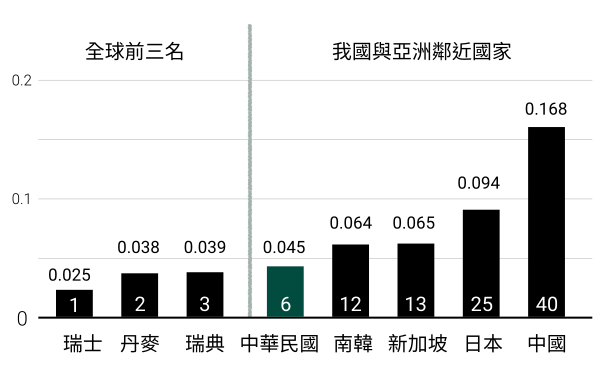
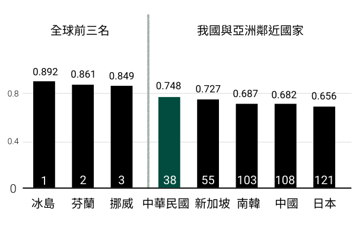

女力行動
有更多快樂自主的女性，才會有快樂自主的國家
2022 大地女力是由風傳媒與婦權會協力製作的專題，我們希望藉由15個既溫柔又強韌女性的故事，激勵這個世界。
在我們深度挖掘她們的生命故事或是轉變歷程，發現了難能可貴的事，當大地女力們一旦知道自己夠堅強時，便進而希望幫助其他女性成長自主，讓自己成為影響力的中心，傳遞女力正能量。
性別圖像
台灣與國際性別平等與性別落差
許多國家會運用性別統計資料，或者成立國家級的性別資料庫，去分析各類性別議題，以作為落實性別平等政策推動的基礎。關於這方面的數據，台灣雖然起步得晚，並且無法納入聯合國開發計劃署進行國際比較，然而行政院性別平等處依然自行編整「性別圖像報告」，將台灣的數據與國際各國進行比較。
性別不平等指數（Gender Inequality Index, GII）
2019年主要國家GII與排名
包括生殖健康、賦權及勞動市場３個領域之５項指標來看，2019年台灣性別平等居全球第6名、亞洲第1名。
我國GII分項指標

與亞洲國家比較，生殖健康領域之孕產婦死亡率遠低於中國大陸，與南韓相近，高於日本與韓國；未成年生育率與新加坡、日本相近，高於南韓；賦權領域之國內議員比率，台灣優於同屬亞洲之新加坡、中國大陸、南韓與日本。勞動市場領域之性別差距與新加坡相近，較南韓、日本小。
性別落差指數（Gender Gap Index, GGI）
2021年主要國家GGI與排名
世界經濟論壇（World Economic Forum, WEF）所編布的GGI，以「經濟參與和機會」、「教育程度」、「健康與生存」及「政治參與」4項指標衡量各國性別差距實況。2021 我國居全球第38名。
我國GGI分項指標

2019年15歲以上的勞動力參與率，就性別差距的表現，台灣與新加坡差不多，比日本、南韓好。但從年齡來看，女性勞動力參與率在25~29歲達到高峰後，因婚育等因素影響會隨著年齡增加急速下降，50歲以後低於各主要國家。
為研議國家利益及整體考量之婦女政策，86年行政院成立「婦女權益促進委員會」（簡稱婦權會），由各相關部會首長、專家學者及民間婦女團體代表組成，期使各項攸關婦女權益之決議，透過跨部會跨領域之研議過程，配合行政機制劍及履及的執行。
婦權會除了倡議、參與政策制定，這十餘年來也推動許多計劃，實際走進偏鄉、新住民及農村婦女的生活場域裡，結合多元（diversity）、平等（equality）、包容（inclusion）三大目標，從改善和提升經濟面下手，期望透過切實改善婦女切身的生計問題，以提升婦女權益。
2022大地女力所收錄的女力故事，便是由婦權會曾經參與或推動之婦女權益相關計畫中所選出。